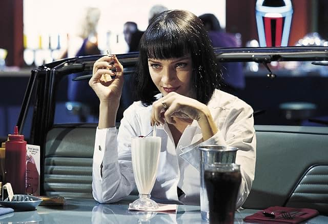
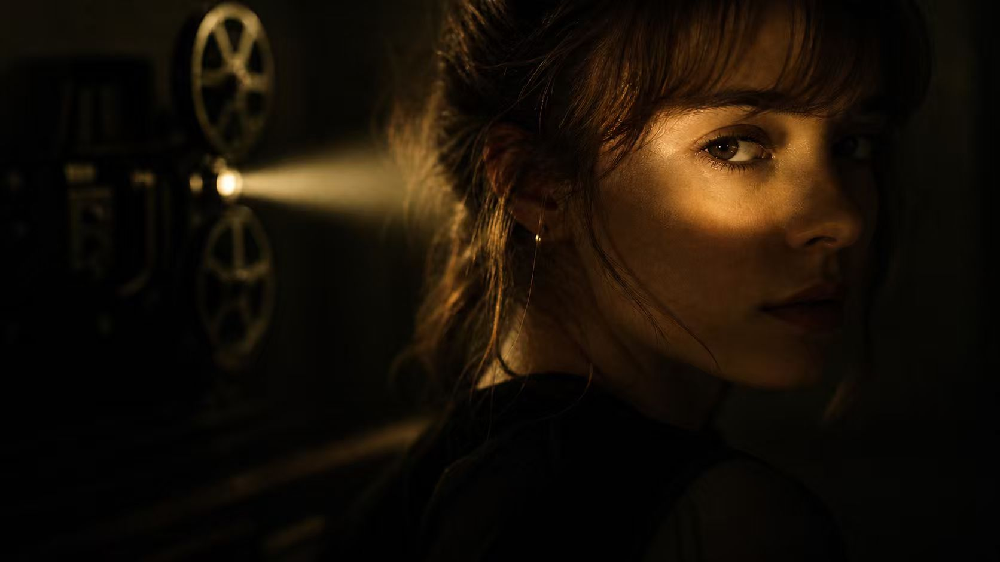
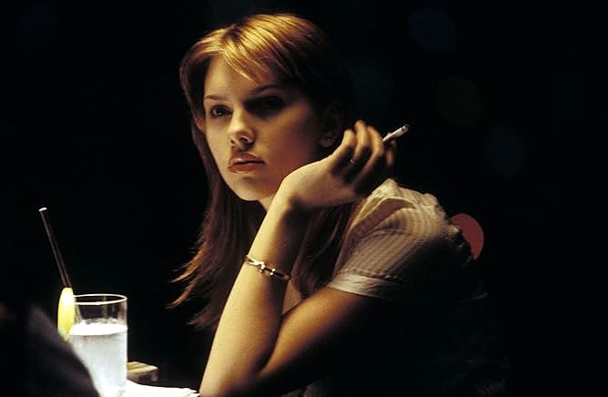
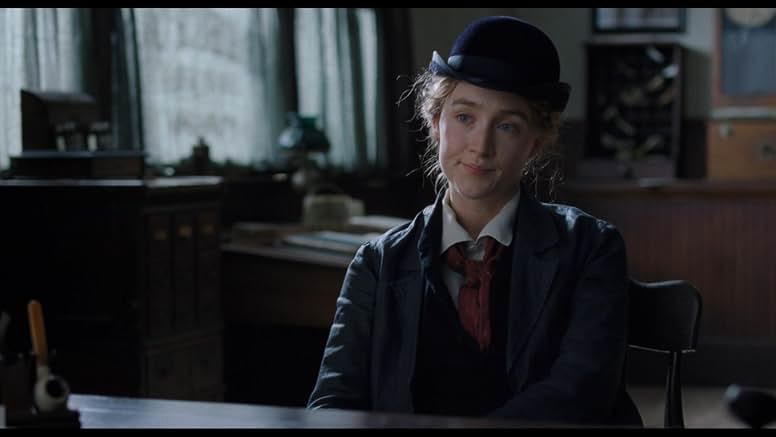
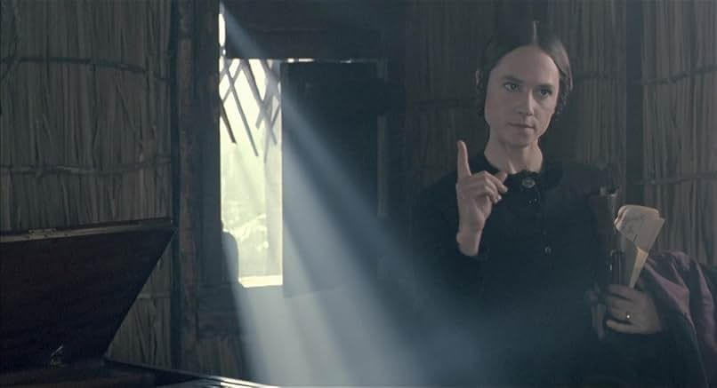
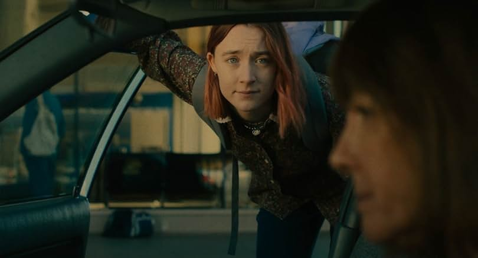

01
Pulp Fiction
Dir. Quentin Tarantino, 1994
A stylised starting point for examining how female presence is framed through visibility, performance, and visual attention.

One-night online screening
Reframing Women in Hollywood Cinema
Start ScreeningThis is a student project.
Featured film
config.js，把
PUT_GOOGLE_DRIVE_FILE_ID_HERE 换成分享链接里的文件 ID。
This programme explores how women are represented in Hollywood cinema. Across five films, it traces a shift from being seen to seeing, from image to subject. It invites viewers to question how looking works — and how it can change.
Programme
Five films that trace the shifting representation of women in Hollywood — from objectified images to complex, self-directed subjects.

Dir. Quentin Tarantino, 1994
A stylised starting point for examining how female presence is framed through visibility, performance, and visual attention.

Dir. Sofia Coppola, 2003
A quiet portrait of interiority, isolation, and female subjectivity within emotional and urban spaces.

Dir. Greta Gerwig, 2019
A film about women's voices, creativity, authorship, and the struggle to define one's own narrative.

Dir. Jane Campion, 1993
An exploration of female expression through silence, touch, and embodied experience rather than visual display.

Dir. Greta Gerwig, 2017
A coming-of-age story that presents female subjectivity through ordinary choices, conflict, and lived experience.